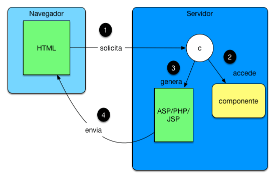

El Modelo cero y el código spaguetti

Soluciones iniciales cliente/servidor en las que tenemos una página JSP/ASP/PHP que se conecta a una base de datos y genera un nuevo contenido html. Es código spaguetti, el que nadie quiere tener que pero que en su momento se usó mucho. A día de hoy lo puedes encontrar en más sitios de los que se piensa. Como ventaja fundamental destaca su sencillez a nivel de arquitectura y como desventaja su poca flexibilidad y nula capacidad de reutilización.
El Modelo 1

Este fue un salto importante , promueve la modularización y el uso de componentes a través de la programación orientada a objeto. Fue desde mi punto de vista un gran salto. Hay enfoques tipo Rails que se apoyaron más en un patrón tipo Active Record y otros en Servicios y Repositorios como Spring. La clave fundamental es generar componentes en la capa de backend y aumentar la reutilización de esa parte.
El modelo 2 (MVC)
Quizás para mucha gente el modelo más importante, se apuesta por la separación de responsabilidades entre Vista, Controlador y Modelo. Prácticamente todos los frameworks web han implementado este enfoque de una forma u otra. Ejemplos son: Struts en Java , ASP.NET en Microsoft o Laravel en PHP.